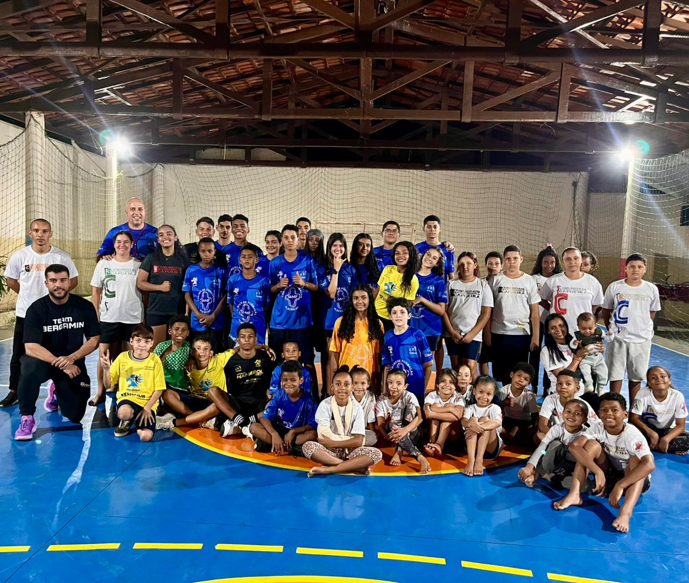
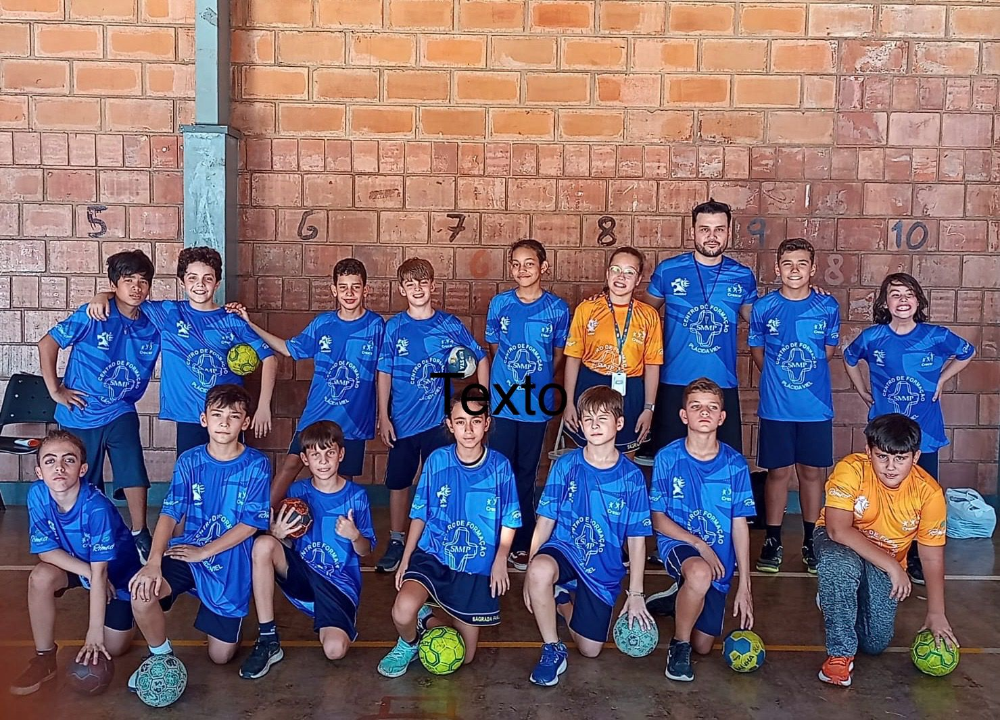
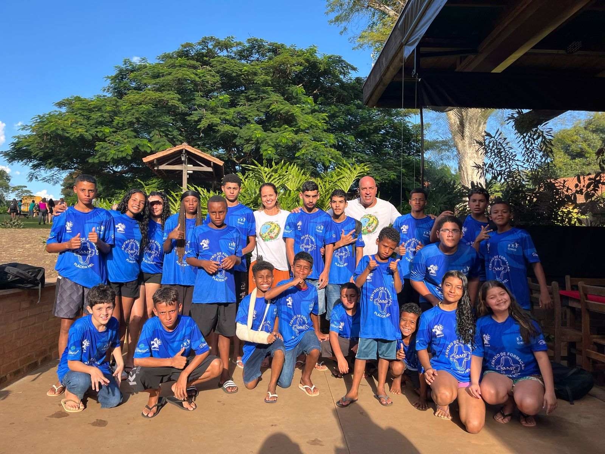
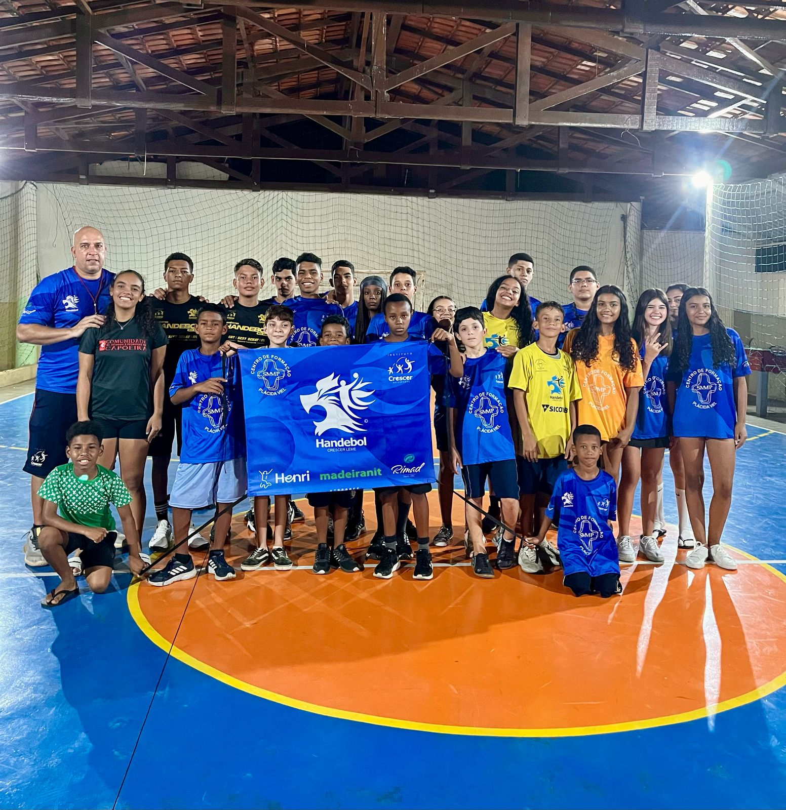
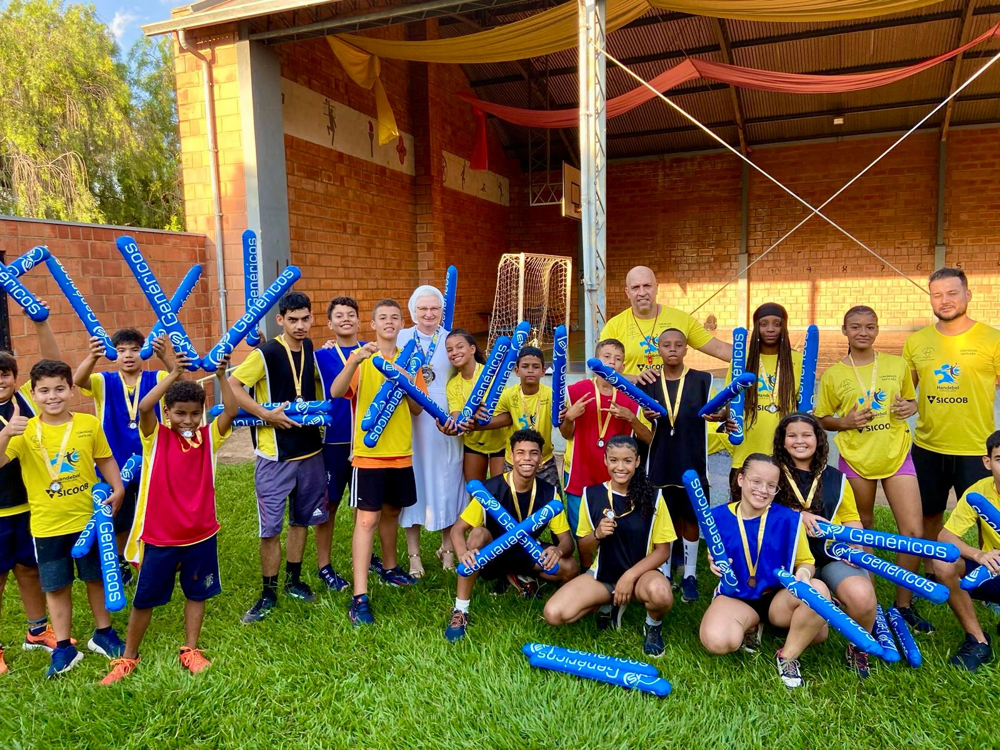
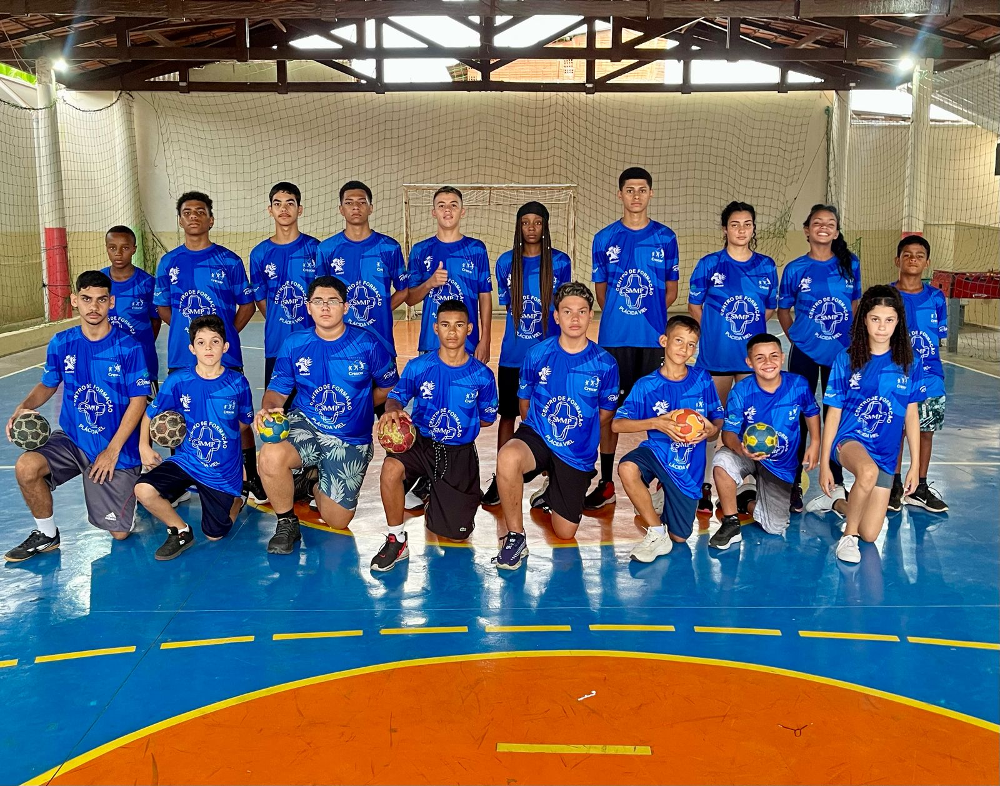
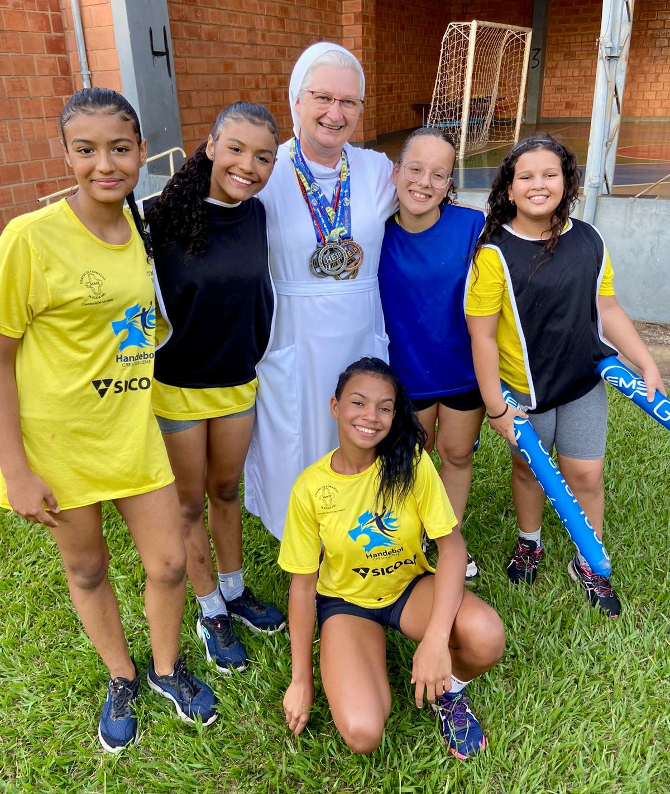
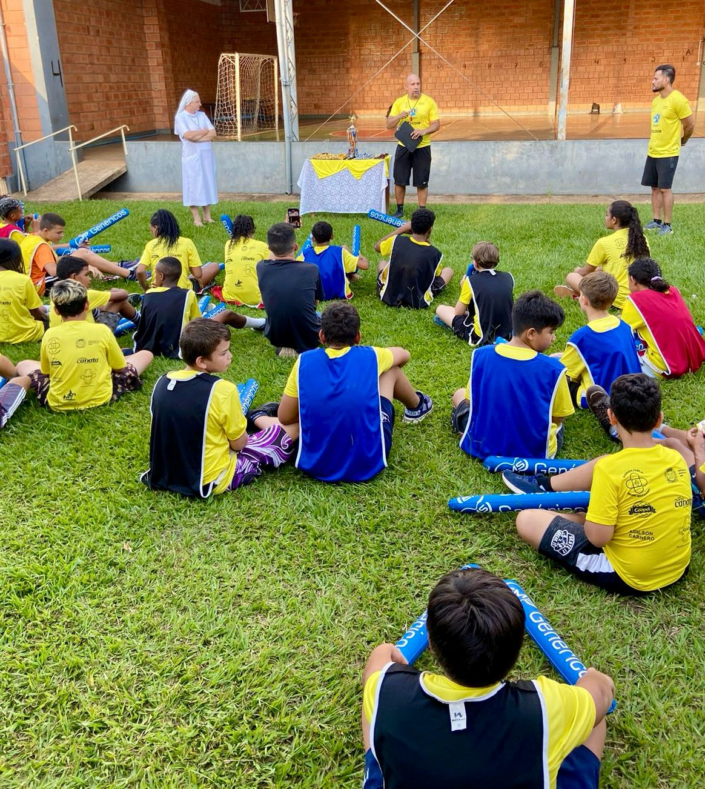

Projeto Handebol Crescer Leme
O Projeto Handebol Crescer Leme nasceu em setembro de 2021 no Centro de Formação Plácida Viel, bairro Alto da Glória com 2 turmas, uma de 9 a 12 anos, e outra de 13 a 17 anos.
Em 2022 ampliamos com uma turma de treinamento na quadra do centro com alunos de 13 anos acima visando competições.
Em 2023 mantivemos todos treinos e começamos a competir na "Liga de Handebol do Estado de São Paulo". Foi um ano de muito aprendizado, viagens e já conseguimos algumas medalhas, e tivemos alunos premiados como melhores em alguns jogos. E a atleta "Maria Eduarda" fez parte da seleção do torneio.
Em 2024 além dos treinos que já existiam, abrimos um grupo de 10 a 12 anos no polo 1 para iniciarem no handebol, com o professor "Fábio". E também uma aula a mais para o pessoal de 9 a 12 anos do polo 2.
Também em 2024 começamos a competir na "Federação Paulista de Handebol", além de continuar a jogar a "Liga" que já estávamos paticipando.
Estamos hoje com 4 turmas:
- Polo 1 iniciação - 18 alunos
- Polo 1 treinamento - 24 alunos
- Polo 2 menores - 16 alunos
- Polo 2 maiores - 20 alunos
O mais importante de tudo isso é apresentar o esporte na vida destas crianças e jovens, despertar a vontade de estar saudável, o respeito com as pessoas, aprenderem que ganhar e perder faz parte da vida! Estes Valores acabam sendo maiores que a modalidade Handebol.